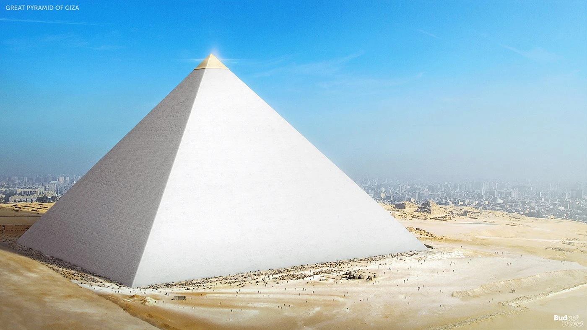
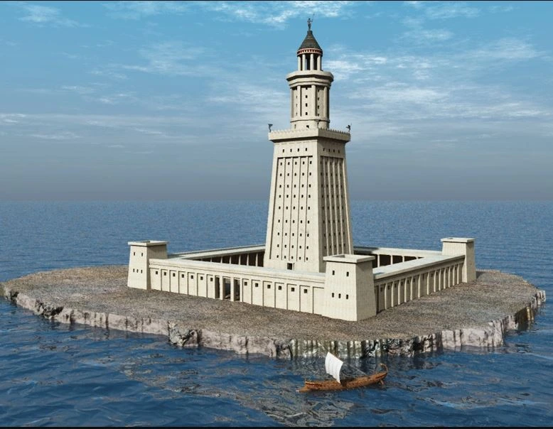

La Gran Piramide de Guiza
Se trata de la única maravilla del mundo antiguo que continua en pie hoy en día y es de lo más sorprendente si pensamos que tiene más de 4500 años. Se construyó entre el 2584 y el 2561 a.C. durante el reinado de Keops. Tiene una altura de 146 metros y una base de 230 y durante unos 3000 años fue la estructura construida por el hombre más alta del mundo.
Está construida en piedra caliza y originalmente estaba revestida en piedra caliza pulida, aunque ese revestimiento se ha perdido. Se barajaron varias teorías sobre el propósito de la pirámide, pero la más aceptada es que se construyó como la tumba del faraón, aunque su construcción en sí sigue siendo un misterio hoy en día. Está compuesta por tres cámaras principales: la del rey, la de la reina y una subterránea.
|  |
Los Jardines Colgantes de Babilonia
Los Jardines Colgantes de Babilonia fueron una de las Siete Maravillas del Mundo Antiguo. Se cree que fueron construidos en la antigua ciudad de Babilonia, en la región que hoy es Irak, durante el reinado del rey Nabucodonosor II. Consistían en una serie de terrazas en niveles ascendentes sostenidas por arcos y columnas, con un elaborado sistema de riego que permitía el crecimiento de una gran variedad de plantas y árboles exóticos. Se construyeron posiblemente como un regalo para la esposa de Nabucodonosor o como un lugar de recreación.
Aunque su existencia exacta aún es objeto de debate, siguensiendo un símbolo icónico de la antigua arquitectura y jardinería.
La Estatua de Zeus en Olimpia
La estatua de Zeus en Olimpia fue una obra maestra de la antigua Grecia, creada por Fidias alrededor del 430 a.C. Estaba ubicada en el templo de Zeus en Olimpia y representaba al dios Zeus sentado en un trono de marfil y oro, con una altura de unos 12 metros.
La escultura detallada y majestuosa se considera una de las Siete Maravillas del Mundo Antiguo, perolamentablemente se perdió a lo largo de la historia y hoy solo existen descripciones y representaciones en textos y monedas antiguas que nos permiten apreciar su esplendor.
 |
El Templo de Artemisa
El Templo de Artemisa, también llamado Artemisión, es un edificio sagrado de la época helénica, construido sobre los restos de templos más antiguos. Se encuentra en Selçuk, Turquía, cerca del mar Egeo, en un territorio anteriormente dominado por el Imperio griego. Este edificio ha sido colocado en la lista de las Siete Maravillas del Mundo debido a su grandeza y decoraciones, una razón idéntica al Mausoleo de Halicarnaso, otra de las siete maravillas del mundo.
Sus formas generales eran la arquitectura helénica clásica: una gran sala rectangular, la más grande posible (la Cella) colocada en un nivel de base y coronada por un techo con dos pendientes con una ligera inclinación. Los frontones del techo son triangulares. Los edificios estaban rodeados por dos filas de columnas, algunas talladas, y ricamente decoradas. Los dos templos, sin embargo, tenían diferencias, por lo que sus descripciones son más detalladas en los párrafos a continuación.
El Mausoleo de Halicarnaso
El Mausoleo de Halicarnaso fue una tumba monumental de mármol blanco, onstruida en honor a Mausolo rey de Caria. El proyecto fue concebido por Artemisia II de Caria, su esposa y hermana. Parece que la construcción pudo comenzar durante el reinado de Mausolo y pudo terminar alrededor del 350, tres años después de la muerte de Mausolo y un año después del fallecimiento de Artemisia.
La construcción de esta monumental tumba fue encargada a los arquitectos Sátiros y Piteos, quienes construyeron una estructura rectangular de 30 por 40 m, sobre ella 117 columnas jónicas en dos hileras sosteniendo el techo en forma de pirámide escalonada, y sobre este último la estatua de una cuadriga con las efigies del rey y la reina, alcanzando en conjunto unos 50 m de altura.
Coloso de Rodas
El Coloso de Rodas era una estatua monumental situada en la isla griega de Rodas que se construyó en el año 208 a.C. La escultura, construida con placas de acero, la realizó el artista Cares de Lindos y estaba dedicada al dios del sol, Helios. Según los datos que han llegado hasta la actualidad, medía unos 32, 41 metros de altura y se tardó en construir unos 12 años.
La estatua del Coloso de Rodas se mandó erigir para celebrar la victoria de los rodios ante el asedio de los diádocos, alineados con Ptolomeo I. Eligieron honorar a Helios porque le consideraban el dios protector de la ciudad.
 |
El Faro de Alejandria
La misma ciudad que albergó la célebre Biblioteca de Alejandría vio también levantarse frente a su costa, en la isla de Pharos, el faro de Alejandría.
Con aproximadamente 160 metros de alto, se convirtió en una de la grandes referencia para los navegantes del Mediterráneo en la Antigüedad. Debido al lugar donde estaba ubicado, se convirtió en el origen de la palabra 'faro' presente en muchas de las lenguas románicas.
|  |